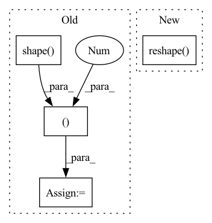

Pattern ID :34601
Before Change
**kwargs: Any,
) -> Tuple[tf.Tensor, tf.Tensor]:
batch_size = tf.shape( q) [0]
q = self.wq(q, **kwargs) // (batch_size, seq_len, d_model)
k = self.wk(k, **kwargs) // (batch_size, seq_len, d_model)
v = self.wv(v, **kwargs) // (batch_size, seq_len, d_model)
q = self.split_heads(q, batch_size) // (batch_size, num_heads, seq_len_q, depth)
k = self.split_heads(k, batch_size) // (batch_size, num_heads, seq_len_k, depth)
v = self.split_heads(v, batch_size) // (batch_size, num_heads, seq_len_v, depth)
// scaled_attention.shape == (batch_size, num_heads, seq_len_q, depth)
// attention_weights.shape == (batch_size, num_heads, seq_len_q, seq_len_k)
scaled_attention = scaled_dot_product_attention(q, k, v, mask)
scaled_attention = tf.transpose(scaled_attention, perm=[0, 2, 1, 3]) // (batch, seq_len_q, num_heads, depth)
concat_attention = tf.reshape(scaled_attention,
(batch_size, -1, self.d_model )) // (batch_size, seq_len_q, d_model)
output = self.dense(concat_attention, **kwargs) // (batch_size, seq_len_q, d_model)
return output
After Change
// linear projections of Q, K, V
query, key, value = [tf.transpose(
tf.reshape( linear(x, **kwargs), shape=[batch_size, -1, self.num_heads, self.d_k]) , perm=[0, 2, 1, 3]
) for linear, x in zip(self.linear_layers, (query, key, value))]
// apply attention on all the projected vectors in batchIn pattern: SUPERPATTERN
Frequency: 3
Non-data size: 4
Instances Fragment ID: 99426734
Project Name: mindee/doctr
Commit Name: 9530f81d15395006b4844299236bdadba11c1dde
Time: 2022-07-01
Author: felixdittrich92@gmail.com
File Name: doctr/models/recognition/transformer/tensorflow.py
M Class Name: MultiHeadAttention
N Class Name: MultiHeadAttention
M Method Name: call(5)
N Method Name: call(5)
M Parent Class: NestedObject,layers.Layer
N Parent Class: tf.keras.layers.Layer
M File Name: doctr/models/recognition/transformer/tensorflow.py
N File Name: doctr/models/recognition/transformer/tensorflow.py
M Start Line: 135
M End Line: 156
N Start Line: 107
N End Line: 121
Before Change
//------------------------------------------------//
// 创建一副新图，并根据每个像素点的种类赋予颜色
//------------------------------------------------//
seg_img = np.zeros((np.shape(pr)[0], np.shape(pr)[1], 3 ))
for c in range(self.num_classes):
seg_img[:,:,0] += ((pr[:,: ] == c )*( self.colors[c][0] )).astype("uint8")
seg_img[:,:,1] += ((pr[:,: ] == c )*( self.colors[c][1] )).astype("uint8")
seg_img[:,:,2] += ((pr[:,: ] == c )*( self.colors[c][2] )).astype("uint8")
//------------------------------------------------//
After Change
// seg_img[:, :, 0] += ((pr[:, :] == c ) * self.colors[c][0]).astype("uint8")
// seg_img[:, :, 1] += ((pr[:, :] == c ) * self.colors[c][1]).astype("uint8")
// seg_img[:, :, 2] += ((pr[:, :] == c ) * self.colors[c][2]).astype("uint8")
seg_img = np.reshape(np.array(self.colors, np.uint8)[np.reshape( pr, [-1]) ], [orininal_h, orininal_w, -1])
//------------------------------------------------//
// 将新图片转换成Image的形式
//------------------------------------------------//
Fragment ID: 99426751
Project Name: bubbliiiing/pspnet-pytorch
Commit Name: 373340e315d6e9a029041ec293673c06c3c1cb7e
Time: 2022-03-04
Author: 3323290568@qq.com
File Name: pspnet.py
M Class Name: PSPNet
N Class Name: PSPNet
M Method Name: detect_image(2)
N Method Name: detect_image(2)
M Parent Class: object
N Parent Class: object
M File Name: pspnet.py
N File Name: pspnet.py
M Start Line: 155
M End Line: 172
N Start Line: 115
N End Line: 190
Before Change
//------------------------------------------------//
// 创建一副新图，并根据每个像素点的种类赋予颜色
//------------------------------------------------//
seg_img = np.zeros((np.shape( pr) [0], np.shape(pr)[1], 3 ))
for c in range(self.num_classes):
seg_img[:,:,0] += ((pr[:,: ] == c )*( self.colors[c][0] )).astype("uint8")
seg_img[:,:,1] += ((pr[:,: ] == c )*( self.colors[c][1] )).astype("uint8")
seg_img[:,:,2] += ((pr[:,: ] == c )*( self.colors[c][2] )).astype("uint8")
//------------------------------------------------//
// 将新图片转换成Image的形式After Change
// seg_img[:, :, 0] += ((pr[:, :] == c ) * self.colors[c][0]).astype("uint8")
// seg_img[:, :, 1] += ((pr[:, :] == c ) * self.colors[c][1]).astype("uint8")
// seg_img[:, :, 2] += ((pr[:, :] == c ) * self.colors[c][2]).astype("uint8")
seg_img = np.reshape( np.array(self.colors, np.uint8)[np.reshape(pr, [-1])], [orininal_h, orininal_w, -1])
//------------------------------------------------//
// 将新图片转换成Image的形式
//------------------------------------------------//
image = Image.fromarray(np.uint8(seg_img)) Fragment ID: 99426725
Project Name: bubbliiiing/hrnet-pytorch
Commit Name: e53724ea45003d8acd5d8b5465fa97038d486824
Time: 2022-03-19
Author: 3323290568@qq.com
File Name: hrnet.py
M Class Name: HRnet_Segmentation
N Class Name: HRnet_Segmentation
M Method Name: detect_image(2)
N Method Name: detect_image(2)
M Parent Class: object
N Parent Class: object
M File Name: hrnet.py
N File Name: hrnet.py
M Start Line: 153
M End Line: 170
N Start Line: 113
N End Line: 188